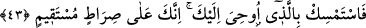

olduğu âşikârdır. Ölümünüzde ne gibi hayır vardır?” diye sorunca Peygamberimiz
(s.a.): “Sizin amelleriniz her Pazartesi ve Perşembe günleri bana arz edilir. Ben
bunlardan hayır olanlara karşı Allah’a hamd ederim, şer olanlara karşı ise sizin
adınıza Allah’tan mağfiret taleb ederim”[165] buyurmuştur.
İşte bunun için Pazartesi ve Perşembe günleri oruç tutmak müstehaptır. Peygamberimiz
(s.a.) şöyle buyuruyor: “Her Pazartesi ve Perşembe günleri cennet kapıları
açılır.”[166]
Evet, bu iki gün Allah katında pek değerlidir. Pazartesi günü Peygamberimiz (s.a.)’in
doğum günü olup Perşembe günü ise amellerin Allah’a arz ve takdim edildiği gündür.
Ey insan, bil ki herkes ölüm kadehini yudumlayacaktır. Şöyle denilmiştir: Allah Teâlâ
Peygamber (s.a.)’e vahyetmiş ve şöyle buyurmuştur: “Rasûlüm! Dilediğini sev, mutlaka
ondan ayrılacaksın. Dilediğini yap, yarın mutlaka ona kavuşacaksın. Dilediğin kadar
yaşa, mutlaka bir gün öleceksin.”[167]
Şâir ne güzel öğüt verir:
Bu yaşlı dünyaya gönül verme,
Çünkü kubbe üzerinde ceviz durmaz.
İster pehlivan, isterse kılıç kullanmada usta ol,
Buradan kefenden başkasını götüremezsin.
Cemşid’in çok sevdiği bir oğlu öldü,
Onu ipekten bir kefene sardılar.
Onuna ağlamak için babası birkaç gün sonra kabre girdi.
İpek kefenin çürüdüğünü gördü ve kendi kendine dedi ki;
Ben ipeği ipek böceğinden zorla almıştım,
Şimdi mezardaki böcekler onu oğlumun üzerinden zorla almışlar.
43. Sen, sana vahyedilene sımsıkı sarıl. Şüphesiz sen, dosdoğru yoldasın.
“Sen, sana vahyedilene”; ahkâmını gözeterek Kur’ân’a “sımsıkı sarıl.” Bizim onları
peşin olarak dünyada cezalandırmamız yahut bu işi âhirete ertelememiz fark etmez.
“Şüphesiz sen,” kendisinde hiçbir eğrilik olmayan, tevhid ve İslâm yolundasın.”
et-Te’vilâtü’n-Necmiyye’de şöyle denilmektedir: Kur’an ahlâkıyla ahlâklanarak
Kur’ân’a sımsıkı sarıl. Çünkü Kur’an Allah’ın sağlam ipidir. Kur’ân’ın akıp gittiği
mecrâda sen de onunla yürü git. Kur’ân’ın dur dediği yerde dur. Ve Kur’ân’a güven.
Zîrâ sen, doğru yoldasın, (böyle yaparsan) bu yolla bizim zâtımıza ulaşırsın.